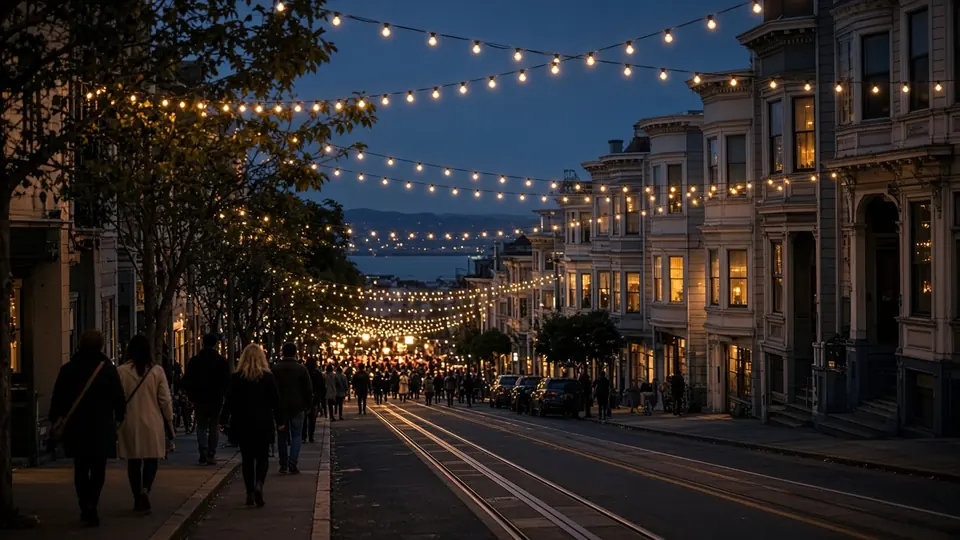
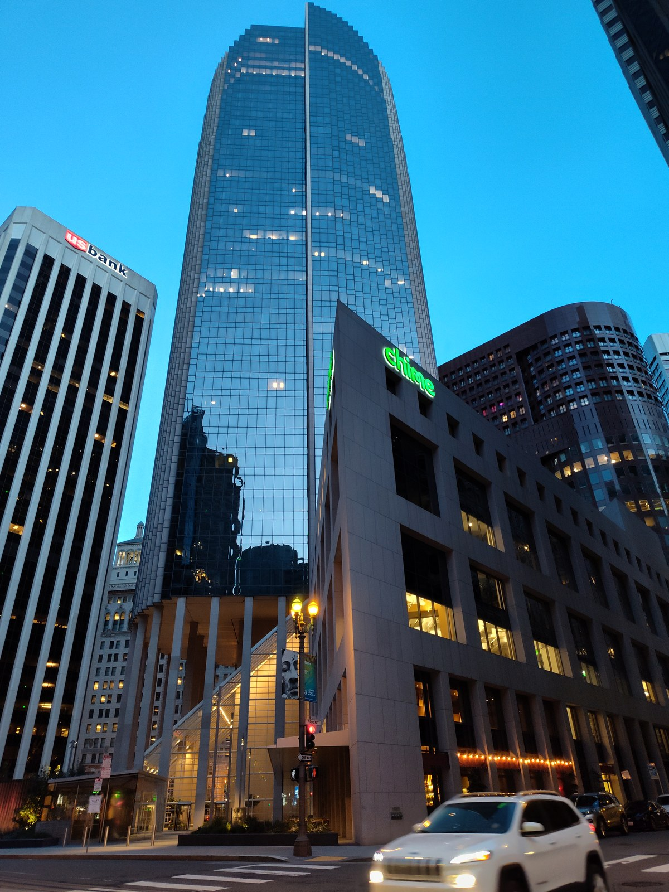

Urban Concierge - Bay Area
Thursday Nov 5 – Sunday Nov 8, 2026 · Snapshot compiled Thu Nov 5, 2026, 6:15 am PT (Urban Concierge - Bay Area)
- Coastal Flood Advisory, SF: through 4 pm Fri Nov 13. High tides up to 1.6 ft above ground in low-lying shoreline areas.
- Beach Hazards Statement, SF: 5 am Thu Nov 5 through Mon evening Nov 9. Sneaker waves, rip currents, 12–16 ft breakers.
What's on

Thu Nov 5, 10 am–2 pm
Ferry Plaza Farmers Market (Thursday edition)
Ferry Building, Embarcadero and Market.
Details →

final performances through Sat Nov 7
Every Saturday Night (A.C.T. / SFBATCO)
Strand Theater, 1127 Market St.
Details →Sat Nov 7, 8 am–2 pm
Ferry Plaza Farmers Market (Saturday)
Ferry Building, Embarcadero and Market.
Details →
More in this brief
Where to eat

No Yelp ratings (Yelp blocks automated loads). New picks this run, each from its Michelin page opened this morning.
State Bird Provisions, Fillmore, SF (1529 Fillmore St) · Californian · Michelin One Star. A lively staple with dim sum-style carts and seasonal California cooking; plates circulate so you build the meal as they pass. +1 415-795-1272. https://guide.michelin.com/us/en/california/san-francisco/restaurant/state-bird-provisions
Rich Table, Hayes Valley, SF (199 Gough St) · Californian · in the Michelin Guide. A petite, packed room with a rustic-chic farmhouse vibe and Californian fare with global ingredients; Michelin notes it books out far in advance. +1 415-355-9085. https://guide.michelin.com/us/en/california/san-francisco/restaurant/rich-table
Nisei, Russian Hill / Polk, SF (2316 Polk St) · Japanese · Michelin One Star. Chef David Yoshimura's tasting menu blends Japanese heritage with California produce; Michelin calls out bold, precise cooking and worthy wine and sake pairings. +1 415-827-6898. https://guide.michelin.com/us/en/california/san-francisco/restaurant/nisei
Getting around

Muni and cable cars: $2.85 single ride with Clipper or tap-to-pay ($3.00 cash), good 120 min. Day pass $5.70. Cable car $9.00. Visitor Passports $15 / $35 / $47 (1/3/7-day). Youth 18 and under ride free (not cable cars; ages 4 and under ride cable cars free). Sunday: F streetcar switchbacks toward the Ferry Building 8:30 am–3 pm and the 8, 28 and 39 reroute for the parade; the 6 Hayes/Parnassus reroutes outbound 5 am–7 pm for Head West. https://www.sfmta.com/getting-around/muni/fares
BART (live feed ~6:11 am Thu):
- Planned 30-min delays Millbrae–SFO–Daly City from 9 pm Sun–Thu.
- Elevator out: Lake Merritt station.
- Carried: Yellow Line late-night single tracking in Contra Costa through Nov 6 · Powell St. entrance at 4th and Market closed through Nov 10 · Green Line out and 24th St–Daly City bus bridge Nov 14–15.
https://www.bart.gov/schedules/advisories
Bikes and scooters: Lyft Bike $1 to unlock + $0.19/min classic or $0.49/min ebike; day pass $15. https://www.lyft.com/bikes/bay-wheels/pricing
SFO: Rental Car Center via AirTrain Blue Line (24 hours). Lyft/Uber pick up on Level 5 of the Domestic Garage (terminal-matched zones); taxis at Arrivals/Baggage Claim center islands. https://www.flysfo.com/passengers/ground-transportation
Where to stay

Union Square has most major hotels and the best transit links. Civic Center/Hayes Valley puts you walking distance from Davies for Friday's symphony and Sunday's Head West market. For the Saturday market, Embarcadero hotels are steps from the Ferry Building; Fisherman's Wharf hotels are on the Sunday parade route, so expect street closures that morning. https://www.sftravel.com/neighborhoods
Assumptions and refresh
- Public data only, re-checked Thu Nov 5, 2026, about 6:10–6:20 am PT: NWS forecast grid and alerts, the Caltrans District 4 news index and six closure pages, the BART advisory/elevator feeds and Powell station page, SFMTA fares plus Veterans Day and Head West travel-update pages, Foodwise market hours, Exploratorium After Dark, Heat game page, SF Symphony concert page, A.C.T. Every Saturday Night, three Michelin pages, Lyft Bay Wheels pricing, and SFO rental-car and Lyft/Uber pages. Nobody was contacted and nothing was signed up for.
- The window is Thu through Sun.
- This is a snapshot. Urban Concierge - Bay Area refreshes it every 8 hours (6 am, 2 pm, 10 pm PT). Times are Pacific standard time. Prices appear only where a cited page lists them.
Not verified
- Warriors local TV listing, ticket prices, and any Chase Center–Muni same-day fare perk weren't re-read.
- Yelp ratings (blocked); restaurant hours and reservation availability not checked.
- After Dark non-member ticket price and Every Saturday Night showtimes/prices aren't on the snippets used this run.
- Head West Marketplace hours and vendors; the organizer's site doesn't list the Nov 8 date, so only SFMTA's closure notice confirms it.
- Carried Caltrans items (Marin US-101, SR-12 Denverton, SR-37, Hospital Curve) weren't re-read.
- Lime and Spin pricing not re-checked.
- Mill Valley ramp closure timing depends on tides; Caltrans gives no schedule.
What changed since the last brief
What changed since the last brief (Wed 10:15 pm): Coastal Flood Advisory now runs through 4 pm Fri Nov 13 (was Mon Nov 9); Beach Hazards Statement stretches through Mon evening Nov 9 (was Sat). Daytime highs nudged up a few degrees (Thu 72, Sat 75). Same headline events; three new restaurant picks. Lake Merritt elevator still out; Millbrae–SFO night delays continue.